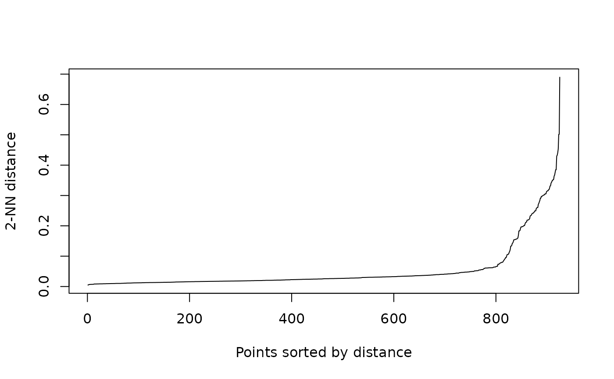
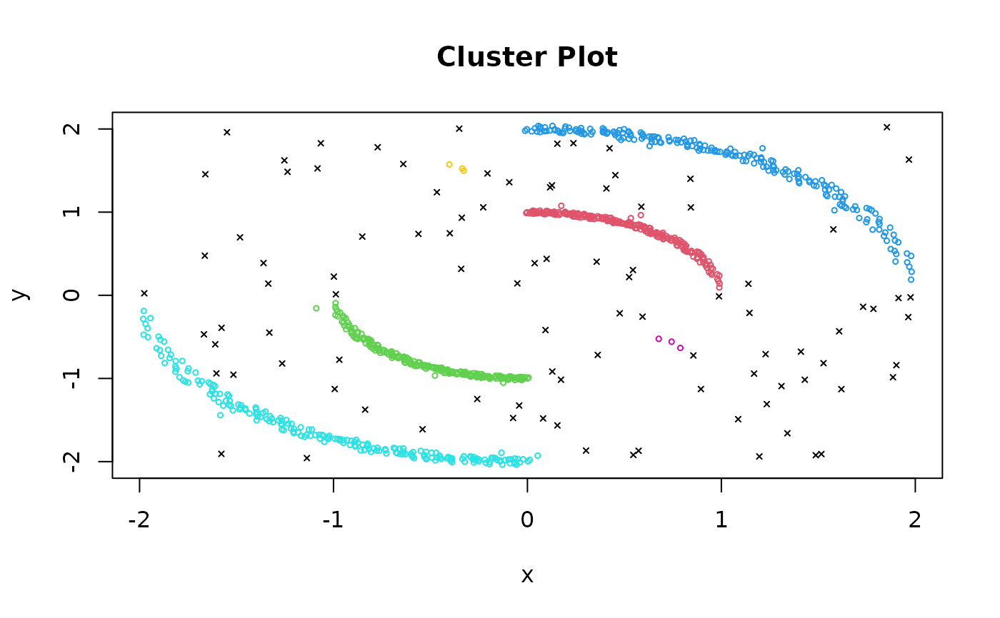
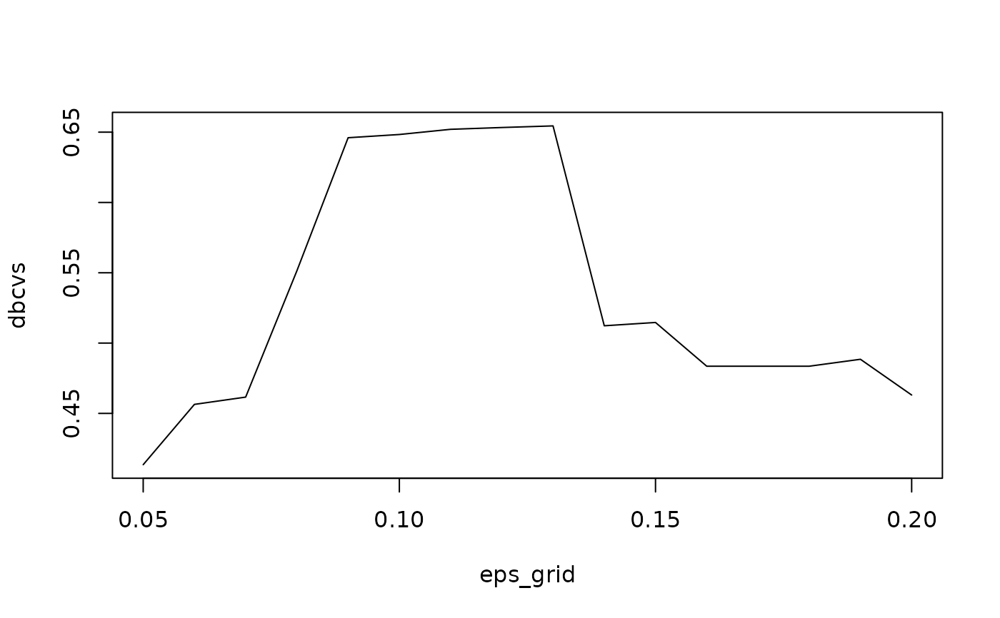

Calculate the Density-Based Clustering Validation Index (DBCV) for a clustering.
Arguments
- x
a data matrix or a dist object.
- cl
a clustering (e.g., a integer vector)
- d
dimensionality of the original data if a dist object is provided.
- metric
distance metric used. The available metrics are the methods implemented by
dist()plus"sqeuclidean"for the squared Euclidean distance used in the original DBCV implementation.- sample
sample size used for large datasets.
Value
A list with the DBCV score for the clustering,
the density sparseness of cluster (dsc) values,
the density separation of pairs of clusters (dspc) distances,
and the validity indices of clusters (c_c).
Details
DBCV (Moulavi et al, 2014) computes a score based on the density sparseness of each cluster and the density separation of each pair of clusters.
The density sparseness of a cluster (DSC) is defined as the maximum edge weight of a minimal spanning tree for the internal points of the cluster using the mutual reachability distance based on the all-points-core-distance. Internal points are connected to more than one other point in the cluster. Since clusters of a size less than 3 cannot have internal points, they are ignored (considered noise) in this implementation.
The density separation of a pair of clusters (DSPC) is defined as the minimum reachability distance between the internal nodes of the spanning trees of the two clusters.
The validity index for a cluster is calculated using these measures and aggregated to a validity index for the whole clustering using a weighted average.
The index is in the range \([-1,1]\). If the cluster density compactness is better than the density separation, a positive value is returned. The actual value depends on the separability of the data. In general, greater values of the measure indicating a better density-based clustering solution.
Noise points are included in the calculation only in the weighted average, therefore clustering with more noise points will get a lower index.
Performance note: This implementation calculates a distance matrix and thus can only be used for small or sampled datasets.
References
Davoud Moulavi and Pablo A. Jaskowiak and Ricardo J. G. B. Campello and Arthur Zimek and Jörg Sander (2014). Density-Based Clustering Validation. In Proceedings of the 2014 SIAM International Conference on Data Mining, pages 839-847 doi:10.1137/1.9781611973440.96
Pablo A. Jaskowiak (2022). MATLAB implementation of DBCV. https://github.com/pajaskowiak/dbcv
Examples
# Load a test dataset
data(Dataset_1)
x <- Dataset_1[, c("x", "y")]
class <- Dataset_1$class
clplot(x, class)
 # We use MinPts 3 and use the knee at eps = .1 for dbscan
kNNdistplot(x, minPts = 3)
# We use MinPts 3 and use the knee at eps = .1 for dbscan
kNNdistplot(x, minPts = 3)

cl <- dbscan(x, eps = .1, minPts = 3)
clplot(x, cl)

dbcv(x, cl)
#> $score
#> [1] 0.6483278
#>
#> $n
#> [1] 925
#>
#> $n_c
#> [1] 204 205 206 207 3 3
#>
#> $d
#> [1] 2
#>
#> $dsc
#> [1] 0.1316204 0.1314293 0.2635730 0.2646372 0.1078308 0.0918902
#>
#> $dspc
#> 1 2 3 4 5
#> 2 1.6307595
#> 3 0.9250901 2.5111654
#> 4 2.5111654 0.9250901 3.2615016
#> 5 0.9107509 0.8629006 1.6758926 1.6184478
#> 6 0.6238978 1.9528722 0.5778111 2.6836967 Inf
#>
#> $v_c
#> 1 2 3 4 5 6
#> 0.7890354 0.8476889 0.5438422 0.7139336 0.8750369 0.8409684
#>
# compare to the DBCV index on the original class labels and
# with a random partitioning
dbcv(x, class)
#> $score
#> [1] 0.6851054
#>
#> $n
#> [1] 925
#>
#> $n_c
#> [1] 201 201 201 201
#>
#> $d
#> [1] 2
#>
#> $dsc
#> [1] 0.1306480 0.1306480 0.2611978 0.2611978
#>
#> $dspc
#> 1 2 3
#> 2 1.6307595
#> 3 0.9250901 2.5111654
#> 4 2.5111654 0.9250901 3.2615016
#>
#> $v_c
#> 1 2 3 4
#> 0.8587727 0.8587727 0.7176515 0.7176515
#>
dbcv(x, sample(1:4, replace = TRUE, size = nrow(x)))
#> $score
#> [1] -0.9335831
#>
#> $n
#> [1] 925
#>
#> $n_c
#> [1] 241 250 227 207
#>
#> $d
#> [1] 2
#>
#> $dsc
#> [1] 1.1673298 0.8447299 1.1702964 1.1645242
#>
#> $dspc
#> 1 2 3
#> 2 0.09714229
#> 3 0.08816127 0.06324173
#> 4 0.10849555 0.10849555 0.06892059
#>
#> $v_c
#> 1 2 3 4
#> -0.9244761 -0.9251338 -0.9459609 -0.9408165
#>
# find the best eps using dbcv
eps_grid <- seq(.05,.2, by = .01)
cls <- lapply(eps_grid, FUN = function(e) dbscan(x, eps = e, minPts = 3))
dbcvs <- sapply(cls, FUN = function(cl) dbcv(x, cl)$score)
plot(eps_grid, dbcvs, type = "l")

eps_opt <- eps_grid[which.max(dbcvs)]
eps_opt
#> [1] 0.13
cl <- dbscan(x, eps = eps_opt, minPts = 3)
clplot(x, cl)